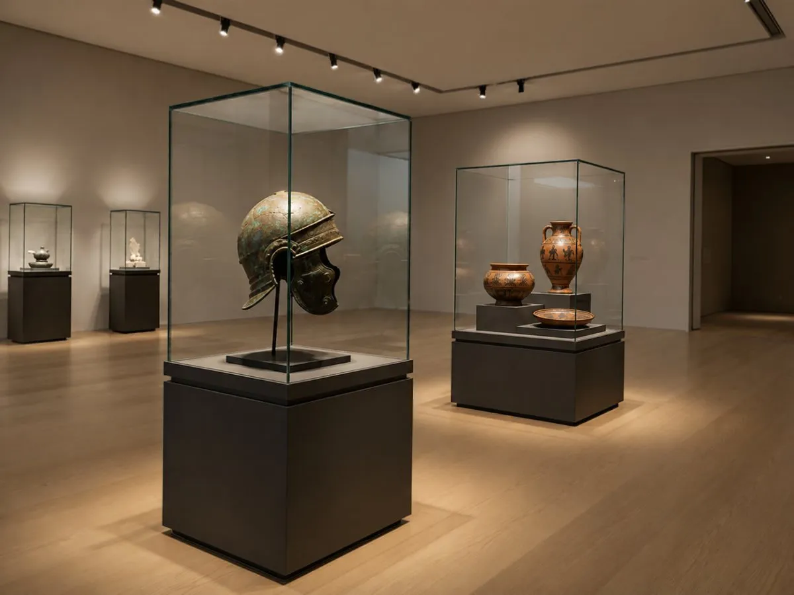

Welk museum in Nijmegen past bij jou? Met kinderen, Romeinen of de oorlog
Bijgewerkt op 22 november 2026.
Nijmegen is de oudste stad van Nederland, en dat zie je terug in de musea. Maar je vindt er ook een fietsmuseum, een museum waar je in het donker loopt en een museum op een binnenschip. Per interesse zetten we de musea op een rij die het bezoeken waard zijn.
Een overzicht van alle musea in en rond de stad lees je op de hoofdpagina musea in Nijmegen.

Zo hebben we gekozen
We lazen in november 2026 de websites van de musea in onze bedrijvengids en deelden ze in naar wat je er komt doen. Openingstijden en tentoonstellingen wisselen, dus kijk voor je gaat even op de site van het museum.
Romeinen, kunst en stadsgeschiedenis
Valkhof Museum: kunst en de grens van het Romeinse Rijk
Bij het Valkhofpark laat het Valkhof Museum kunst en geschiedenis samenkomen. De rode draad is de grens van het Romeinse Rijk, die dwars door deze regio liep.
Het museum vertelt verhalen over plekken waar tijden en culturen elkaar raakten. Op de website zie je welke tentoonstellingen er nu zijn.
Goed voor: wie de Romeinse kant van Nijmegen wil zien.
Maelwael van Lymborch Huis: het atelier van de gebroeders
In de Burchtstraat stond het familieatelier waar Johan Maelwael en de gebroeders Van Lymborch opgroeiden. Rond 1400 werden ze beroemd aan het Franse hof met hun diepblauwe en gouden miniaturen.
Je bezoek gaat altijd met een rondleiding, en je daalt af in de kelder van het veertiende-eeuwse atelier. Reserveer vooraf een plek.
Goed voor: liefhebbers van middeleeuwse kunst.
Huis van de Nijmeegse Geschiedenis: gratis binnenlopen
In de Mariënburgkapel vertelt het Huis van de Nijmeegse Geschiedenis steeds een ander stuk van het verhaal van de stad, zoals waarom Nijmegen 'Havana aan de Waal' heette. Er zijn wisselende exposities, lezingen en filmavonden.
De entree is gratis. Op maandag is het dicht, en op dinsdag ga je er vanaf twee uur 's middags heen.
Goed voor: een half uurtje tussen het winkelen door.
Met kinderen
De Bastei: van mammoet tot bever
De Bastei zit in een zestiende-eeuws verdedigingswerk onder de Waalkade. Het vertelt het verhaal van de rivier, van de mammoet en de witte wolf tot de bever en de roerdomp die er nu leven.
In de Waalzaal denk je zelf mee over de toekomst van het rivierengebied, en er is een Basteicafé. Het museum is elke dag open van tien tot vijf. Koop je tickets vooraf online.
Goed voor: grote en kleine onderzoekers.
Museum Kinderdorp Neerbosch: opgroeien in een weeshuis
Tussen 1863 en 2000 woonden zo'n twintigduizend kinderen in het Kinderdorp Neerbosch. In het vernieuwde museum leer je een aantal van hen kennen via hun eigen verhaal.
Het gebouw heeft een eigen kapel en begraafplaats. Het museum is open op dinsdag, woensdag en zondag.
Goed voor: gezinnen met wat oudere kinderen.
De Tweede Wereldoorlog
Vrijheidsmuseum: oorlog en vrijheid in Groesbeek
In de heuvels van Groesbeek, waar Market Garden en Veritable zich afspeelden, kijk je vanuit verschillende kanten naar oorlog en vrijheid. Het gebouw heeft een twaalf meter hoge koepel die doet denken aan een parachute.
Er zijn interactieve onderdelen en een diorama met lichteffecten. Binnen blijft het altijd koel, dus het is een goede keuze op een regenachtige of juist hete dag.
Goed voor: wie een middag de tijd heeft, met de auto of de bus.
Infocentrum WO2: begin hier je oorlogswandeling
In de Ridderstraat krijg je in de Experience een beeld van de oorlogsjaren in Nijmegen en omgeving. Je hoort waar je in de regio nog sporen van die tijd ziet.
Hier beginnen ook stadswandelingen. Het centrum is van maandag tot en met zaterdag vanaf tien uur open, en op zondag vanaf het middaguur.
Goed voor: een eerste kennismaking met de oorlogsgeschiedenis.
Net even anders
MuZIEum: ontdekken hoe het is om niet te zien
In het MuZIEum neemt een blinde of slechtziende gids je mee door een pikdonkere ruimte, waar je oren en handen het werk doen. Dat kan vanaf acht jaar.
Met de Ribbelroute loop je met augmented reality door de stad. Je betaalt met de Museumkaart, en er is een museumcafé.
Goed voor: een uitje met vrienden of collega's.
Velorama: fietsen van vóór de pedalen
Aan de Waalkade zie je houten loopfietsen, hoge bi's en fietsen met vreemde aandrijvingen, tot en met de racefiets van Wim van Est. Er zijn ook wisselende tentoonstellingen.
Velorama is elke dag open van twaalf tot vijf. De Museumkaart geldt hier niet.
Goed voor: fietsliefhebbers en wie iets ongewoons zoekt.
Museum voor Anatomie en Pathologie: hoe je er vanbinnen uitziet
In het studiecentrum van het Radboudumc zie je menselijke preparaten in drie collecties: anatomie, pathologie met zo'n vijfhonderd organen, en aangeboren afwijkingen.
De toegang is vrij, voor een rondleiding betaal je. Het museum is doordeweeks overdag open, op vrijdag tot één uur.
Goed voor: wie niet snel misselijk wordt.
Binnenvaartmuseum: aan boord van een oud schip
In de Waalhaven loop je over de loopbrug aan boord van de Jos Vranken. In het vooronder zie je scheepsmodellen, foto's en voorwerpen uit het leven aan boord.
Vrijwilligers, vaak oud-schippers, leiden je graag rond. De entree is gratis, en het museum is open op dinsdag en zaterdag van twaalf tot vier.
Goed voor: wie van schepen en verhalen houdt.
Ook goed
- Landhoofd bij de spoorbrug: op zondag leiden vrijwilligers je gratis rond in het bastion uit 1879.
- Het Museumpark Orientalis in Heilig Landstichting, net buiten de stad.
Meer tips lees je in musea in Nijmegen: welke ga jij ontdekken? en ons artikel over het Vrijheidsmuseum.
Meer in onze gids musea in Nijmegen.
Veelgestelde vragen
Welk museum in Nijmegen is leuk met kinderen?
De Bastei aan de Waal vertelt het verhaal van de rivier en zijn dieren, en is elke dag open. In het MuZIEum kunnen kinderen vanaf acht jaar mee in het donker.
Welke musea in Nijmegen zijn gratis?
Het Huis van de Nijmeegse Geschiedenis en het Binnenvaartmuseum hebben gratis entree, en het Anatomisch Museum heeft vrije toegang. Bij Landhoofd zijn de rondleidingen op zondag gratis.
Kan ik met de Museumkaart naar het MuZIEum?
Ja, het MuZIEum neemt de Museumkaart aan. Bij Velorama geldt de Museumkaart niet.
Waar leer je over de Tweede Wereldoorlog bij Nijmegen?
In het Vrijheidsmuseum in Groesbeek en in het Infocentrum WO2 in de Ridderstraat, waar ook stadswandelingen beginnen.